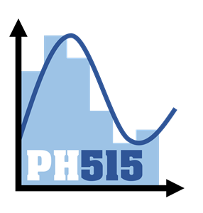

LSPH515 : Méthodes numériques

Cours conçu pour les étudiants de L3 de l'Université de Versailles Saint-Quentin (UVSQ)
Présentation du cours
En Physique, les problèmes à résoudre ne peuvent pas toujours l'être de manière analytique. Dans les cas où une résolution analytique est difficile, voire impossible, on approximera la solution à l'aide de méthodes numériques. On parle alors de "résolution numérique" d'un problème.
Une méthode numérique est une suite de procédures calculatoires ou d'algorithmes.
Vous trouverez dans ce cours des méthodes numériques pour résoudre différent problèmes classiques en Physique :
-
Chapitre I : Introduction : une introduction aux méthodes numériques.
-
Chapitre II : Recherche de racines : un panel de méthodes pour approximer les racines d'une fonction.
-
Chapitre III : Interpolation polynomiale : un panel de méthodes pour interpoler des données discrètes à l'aide d'un polynôme.
-
Chapitre IV : Intégration numérique : un panel de méthodes pour approximer l'intégrale d'une fonction.
-
Chapitre V : Systèmes linéaires : un panel de méthodes pour approximer la solution d'un système linéaire d'équations.
L'objectif est qu'à la fin de ce cours vous soyez capables de :
-
Choisir une méthode numérique adaptée à un problème donné, en se basant sur les hypothèses d'applicabilité des méthodes, ainsi que sur leurs performances (simplicité, vitesse, stabilité, coût en mémoire, etc.).
-
Implémenter les différents algorithmes sous la forme de codes Python, avec des adaptations si besoin.
-
Appliquer les méthodes numériques à un problème donné, en choisissant pertinemment les paramètres d'entrée de l'algorithme (valeurs initiales, conditions d'arrêt, etc.).
Chaque chapitre sera accompagné d'un problème exemple, auquel seront appliquées les différentes méthodes vues dans ce cours.
Credits
© Nicolas OUDART & Aymeric CHAZOTTES
Remerciements à Alice LE GALL